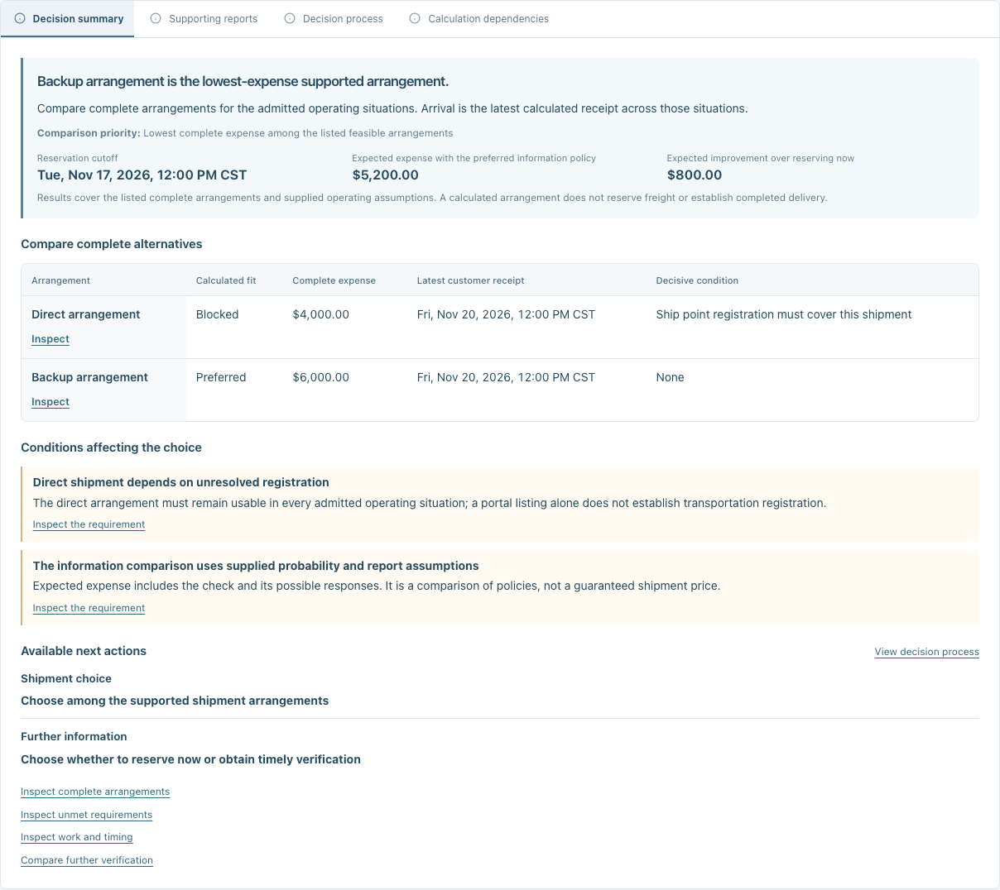
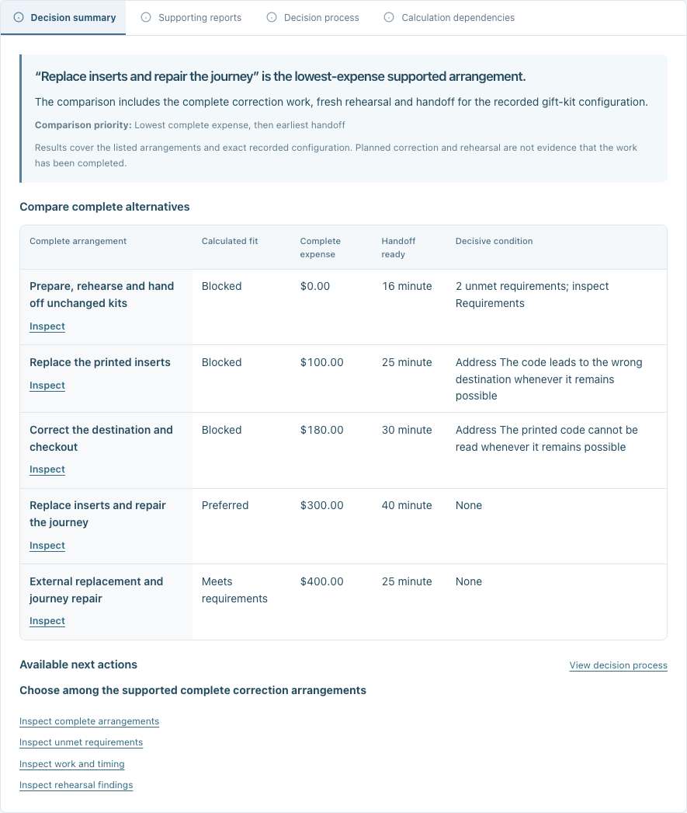
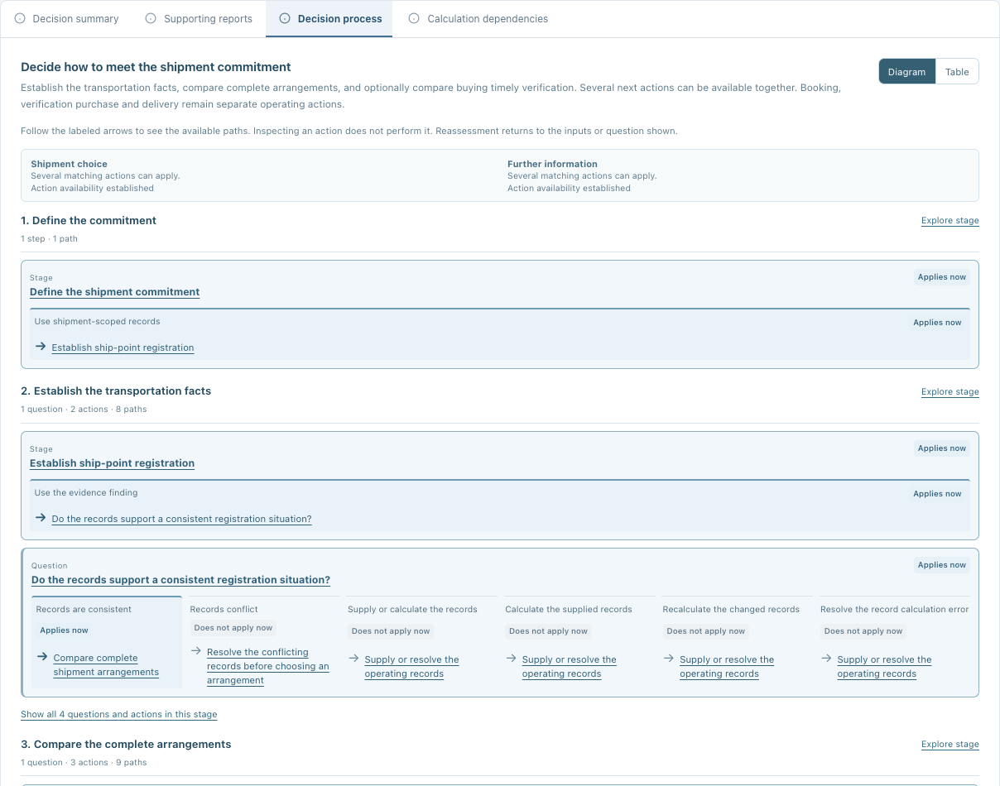

DecisionLab Marketplace brings related apps and workflows together in collections for the work you do. Start with a business question, enter the relevant facts and calculate which responses the recorded requirements support.
Maya needs a shipment to reach its customer. Leah needs gift kits ready for handoff. Their work differs, but both face the same practical difficulty: a plausible option can fail when timing, capacity, permissions and the complete cost are considered together.
One decision pattern. Two kinds of work.
The two Decision summaries below come from guided analyses in Decision Lab. Each leads with the business finding, compares complete alternatives and identifies the conditions and next actions that matter. Supporting reports remain available when someone needs the basis for a finding.
Shipment readiness


Maya’s $4,000 Direct option depends on unresolved ship-point registration. The $6,000 Backup arrangement meets the modeled commitment in both admitted registration states. The summary exposes that condition instead of treating the cheaper quote as sufficient.
Gift-kit readiness


With a full day available, Leah can prepare the complete in-house correction for $300. A $400 external package also needs its own timing, permission and confirmation checks.
The shared decision pattern is to compare complete responses before making an operating commitment. Complete a Commitment supplies the commitment assessment: can a complete arrangement meet the recorded obligations under the declared conditions? Domain apps supply the actual shipment or gift-kit meanings, requirements and comparison policy.
A workflow can connect several assessment patterns. Evidence establishes what the supplied observations support; commitment assessment checks complete responses; an information-value assessment compares a further check with acting now. Those findings keep their different meanings as the workflow brings them together.
This is how we put reusable decision patterns to work: a recognizable approach, configured for a specific domain, with conclusions bounded by its inputs and assumptions.
From a reusable pattern to a working case.
Template authors create the reusable structure
A template defines executable inputs, rules and supported kinds of assessment. Template authors build and validate that foundation so other authors can apply it to recurring questions.
App authors configure it for particular work
An app supplies the domain concepts, requirements and priorities. Authors connect apps into a workflow and configure its questions, decision summary, supporting reports and decision process. Published versions preserve which configuration a case uses.
Case workers analyze a particular situation
A case supplies one situation’s facts and records. A coordinator applies those inputs and chooses Calculate. After a change, Recalculate updates the findings; optional Auto-update recalculates after applied input changes. A calculated response still requires the responsible people to decide and carry out the work.
From the collection to the decision.
A collection groups related use cases, apps and workflows. In Decision Lab, use Marketplace to install or update a collection, then choose Start analysis for its workflow. The shipment and gifting articles link directly to their worked examples.
- Set the business context. Inputs have their own tabs and sections. Use the configured Forms or the complete YAML representation, then apply changes.
- Calculate the findings. The Decision summary shows the supported answer, compact comparison, decisive conditions and available next actions. Changed inputs need a current calculation.
- Inspect the reason when needed. Open a linked supporting report or View decision process to see how questions and findings connect to the available responses.


Inputs and reports navigate independently. Someone can inspect another arrangement or supporting finding while keeping the current input section in view. Detailed calculations remain available without making every reader work through them first.
Bring the same assessments into your own work.
The shared patterns also support company-specific interfaces and data flows. The shipment CLI story follows changed orders into an exception queue. The gift-kit CLI story screens campaigns before a handoff becomes urgent.
The shipment SDK desk and gift-kit SDK desk show how a team can build its own focused interface around the same assessment capabilities. Their forms and integrations serve the team’s process; the configured apps retain the reasoning. The sample-code repository contains the full implementations.
Explore the shipment series or gifting series to see how different facts change the response someone can justify.